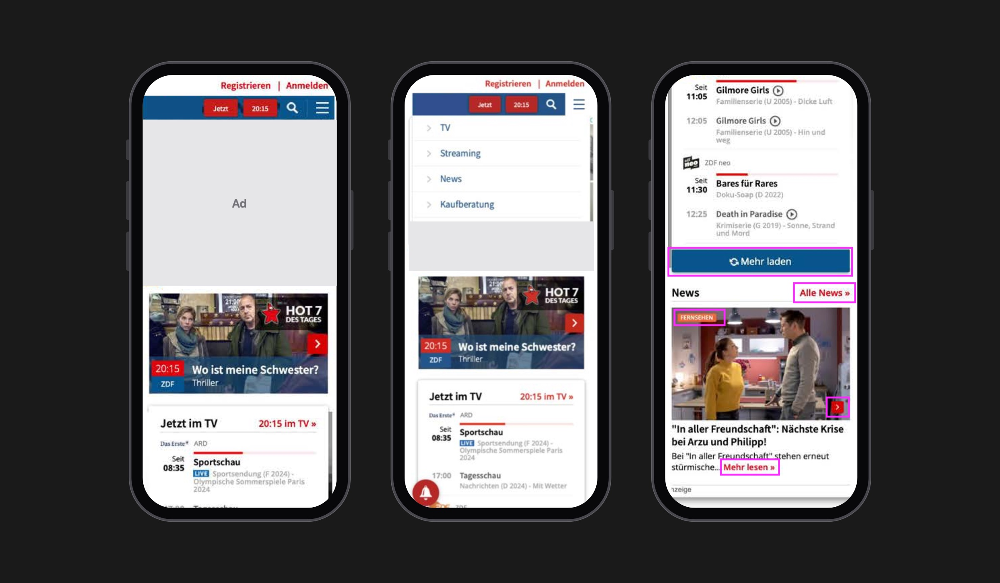
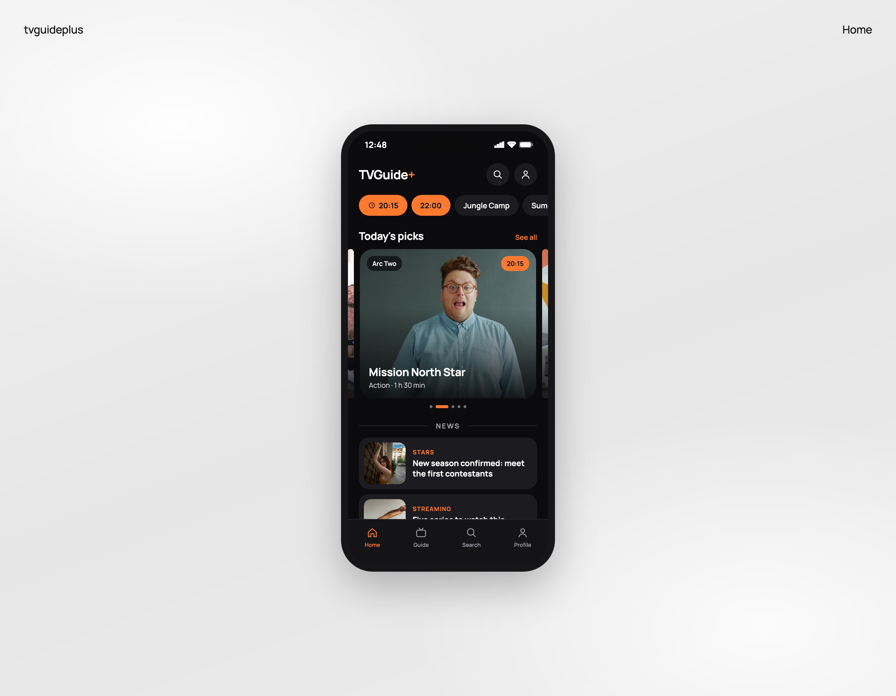
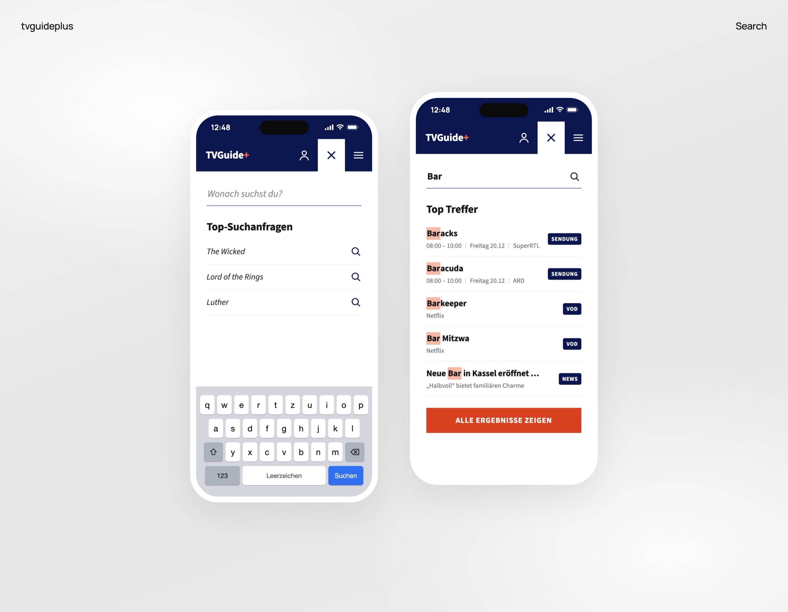
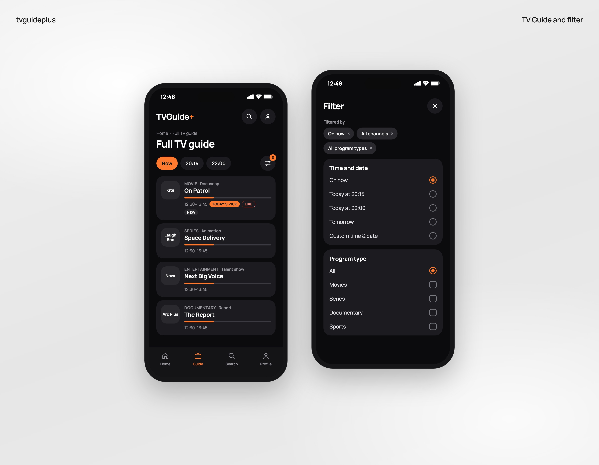

Media / Publishing · 2025 · UX Design Intern
tvguideplus
Identifying usability opportunities on a mobile content platform
3 min read
Problem
tvguideplus is a German entertainment platform that tries to serve four needs at once: TV schedule lookup, entertainment browsing, news reading and streaming discovery. On a phone, those sections compete for the same small screen, so quick tasks like checking what's on tonight get buried under ads and editorial content.
My goal was to find the biggest usability barriers on mobile and turn them into prioritized improvements.
Research
I ran a mixed-method study: user interviews with university students and internal users who knew digital content platforms, followed by a moderated usability test with 5 participants and five tasks, from finding a program at a set time to subscribing to the newsletter.
- 90%Task completion
- 82.5SUS score
- 5Participants
The overall numbers were healthy, so the site wasn't broken. The friction sat in specific paths: broad search results, time and channel filters that were hard to find, no central news page, and a newsletter signup hidden at the bottom.
"I just wanted to see what's on at 20:15."

I also benchmarked JustWatch and TV Spielfilm, and summarized the findings in a persona, Leon, an efficient mobile viewer who checks the platform in short breaks.
Insight
People came with one fast task, mostly "what's on tonight", and the homepage made them dig for it.
Making
Home: TV tips first, news clearly separated
I opened the homepage with trending topic chips and a "TV tips of the day" carousel, then a clear NEWS divider before the editorial content, instead of the large ad and mixed feed at the top. Participants said the oversized ad made the site feel like a scam, and that news articles were hard to tell apart from ads.

Search: suggestions first, results labeled by type
Search opens on the most popular searches, and results show as you type, each labeled as a TV program, streaming title or news article, with a button to see all results. Before, searching "Technik" returned one broad list, and participants weren't sure whether to use search, the menu or the homepage sections.
InteractiveSearch, and see what each result is
Rebuilt from my designs, in German as on the site. Results for “bar” come from my screens; the others are samples. Try “bar” or “lu”.

TV Guide: now, 20:15 and 22:00 one tap away
The full TV guide opens with tabs for now, 20:15 and 22:00, and one filter panel for time, genre and channel, with the active filters shown as chips you can remove. Finding a program by time or by channel broke down on filters buried several taps deep, and "I just wanted to see what's on at 20:15" came up again and again.
InteractiveWhat's on at 20:15?
Komplettes TV Programm
Rebuilt from my designs. “jetzt” uses the listings from my screens; 20:15 and 22:00 are sample listings.
InteractiveFilter the guide
Filter
Rebuilt from my designs. Pick a time or a type, then remove a chip with its ×.

Outcome
I delivered a prioritized list of usability opportunities and redesigned the Home, Search and TV Guide screens around them.
With a small sample, the next step I'd take is testing the redesign with more participants to confirm the improvements hold up.
Walkthrough
The prototypes from this case study, joined into one flow: starting on Home, searching for a show, opening the TV guide and filtering it. Home and its menu are rebuilt from my Home design; the menu's other items are placeholders.
Plays on its own. Home and its menu are rebuilt from my Home design; the rest uses the prototypes above. Pause it any time.
From Home to tonight's films
Start on Home
TV tips come first, and the news has its own section under a clear divider.
Search
Tap the search icon and type “bar”. Every result says what it is: Sendung, VOD or News.
What's on tonight
Back on Home, open the menu, pick TV-Programm, then switch the guide to 20:15.
Filter the guide
Pick Heute um 20:15 and Spielfilme, close the filter, and the guide shows only the two films.